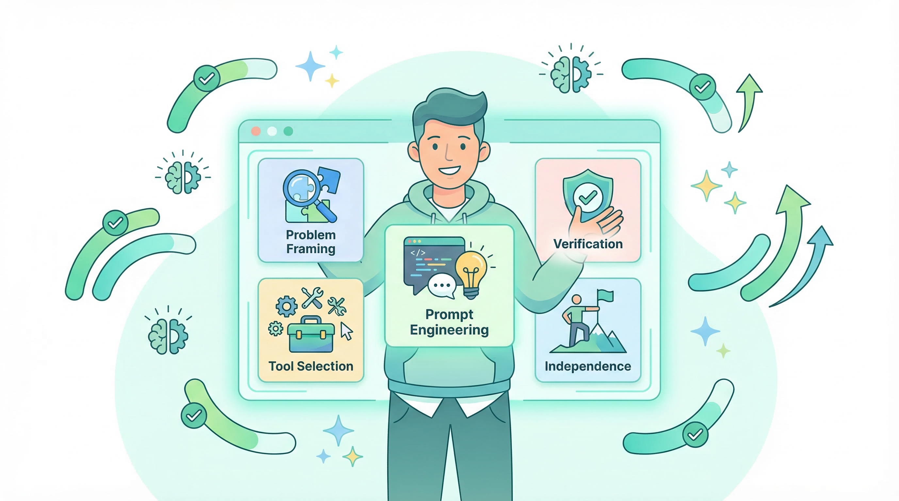
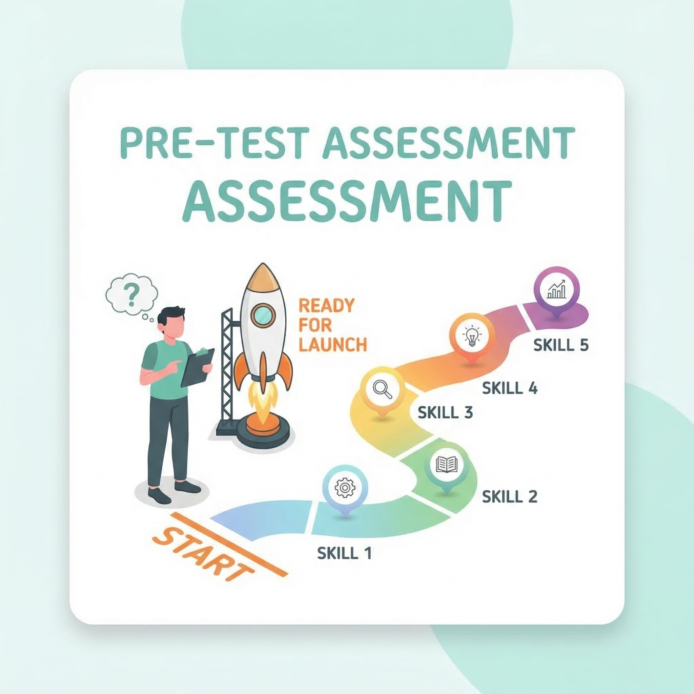
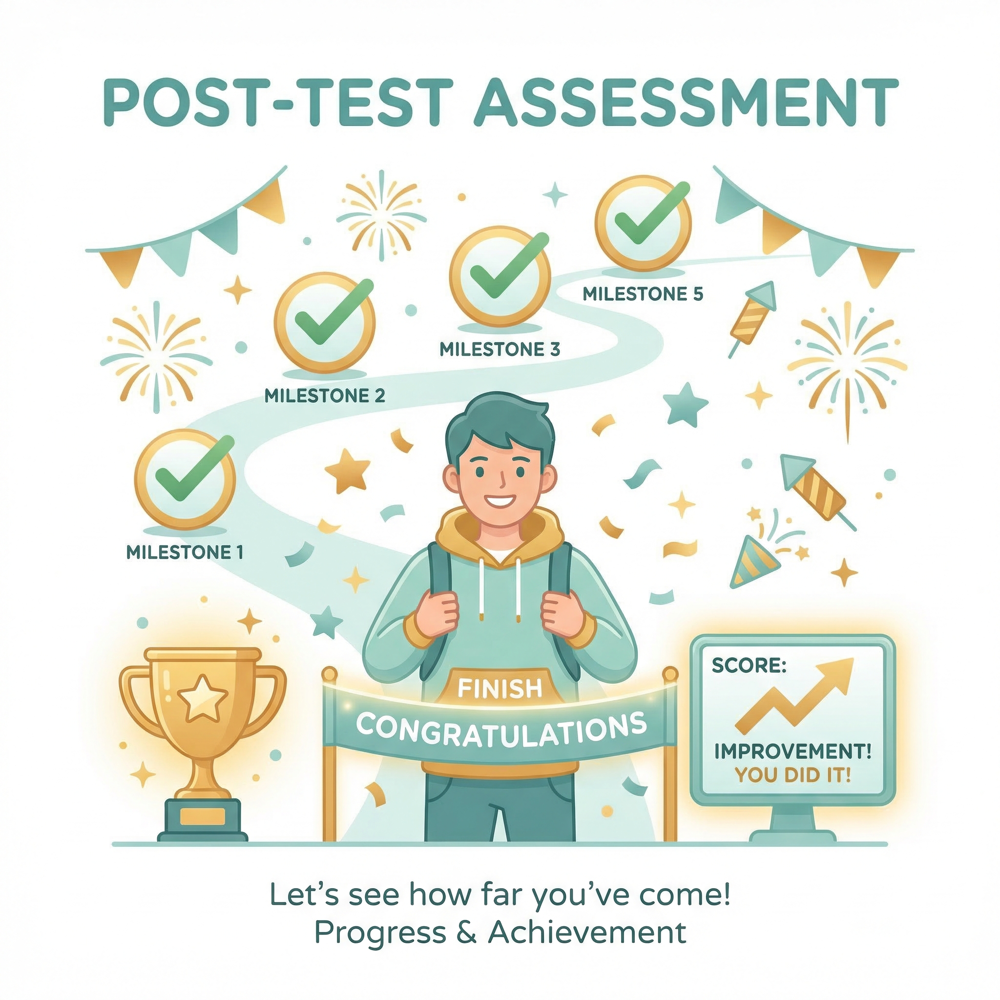

AI Mastery
Assessment
5 real-world scenarios. One tap each.
For high school AI workshop students only

Pre-Test
Before your session

Post-Test
After your session
Before We Start
6 quick questions about using AI (~3 min)
Make up a number from 0 to 100 plus one letter A-Z, like 57R. Use the same code on every survey and test.
Q1 of 10
Loading...
You're All Set!
Thank you for completing the pre-assessment.
Your session will begin now.
Your responses have been recorded.
Your AI Mastery Score
0
out of 24
Skill Breakdown
Two More Quick Questions
How confident are you using AI independently now?
Not at allVery confident